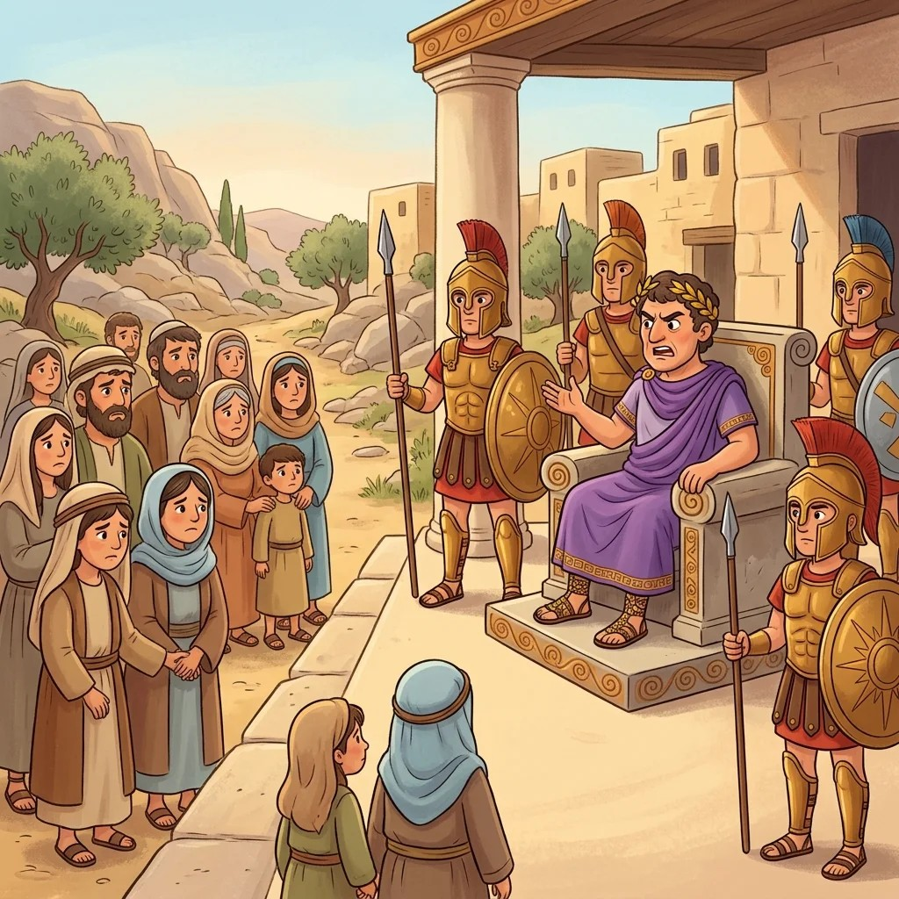
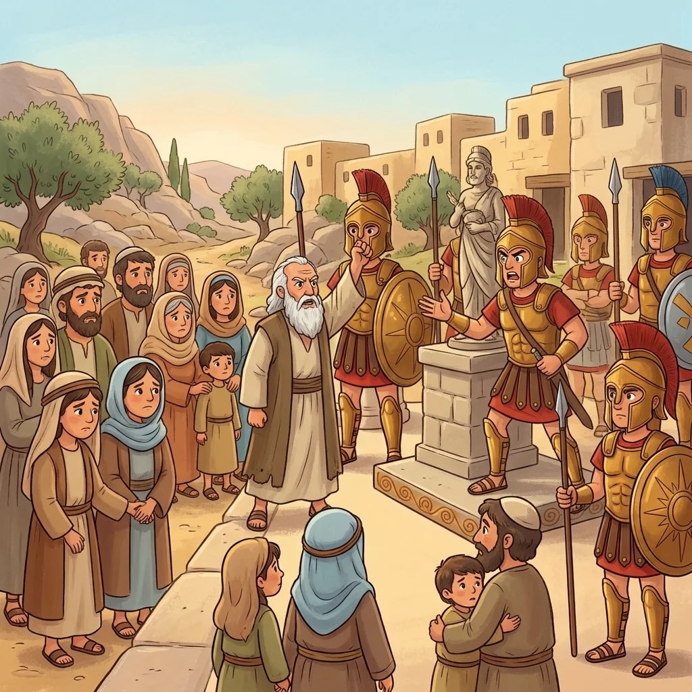
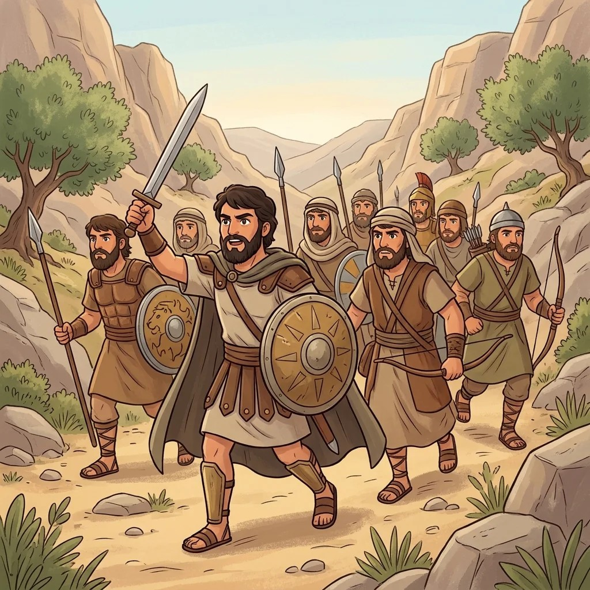
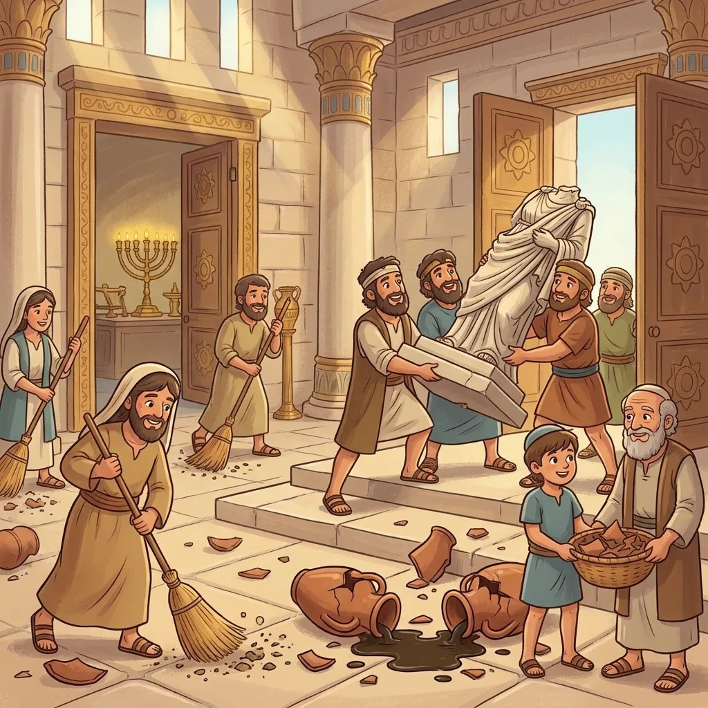
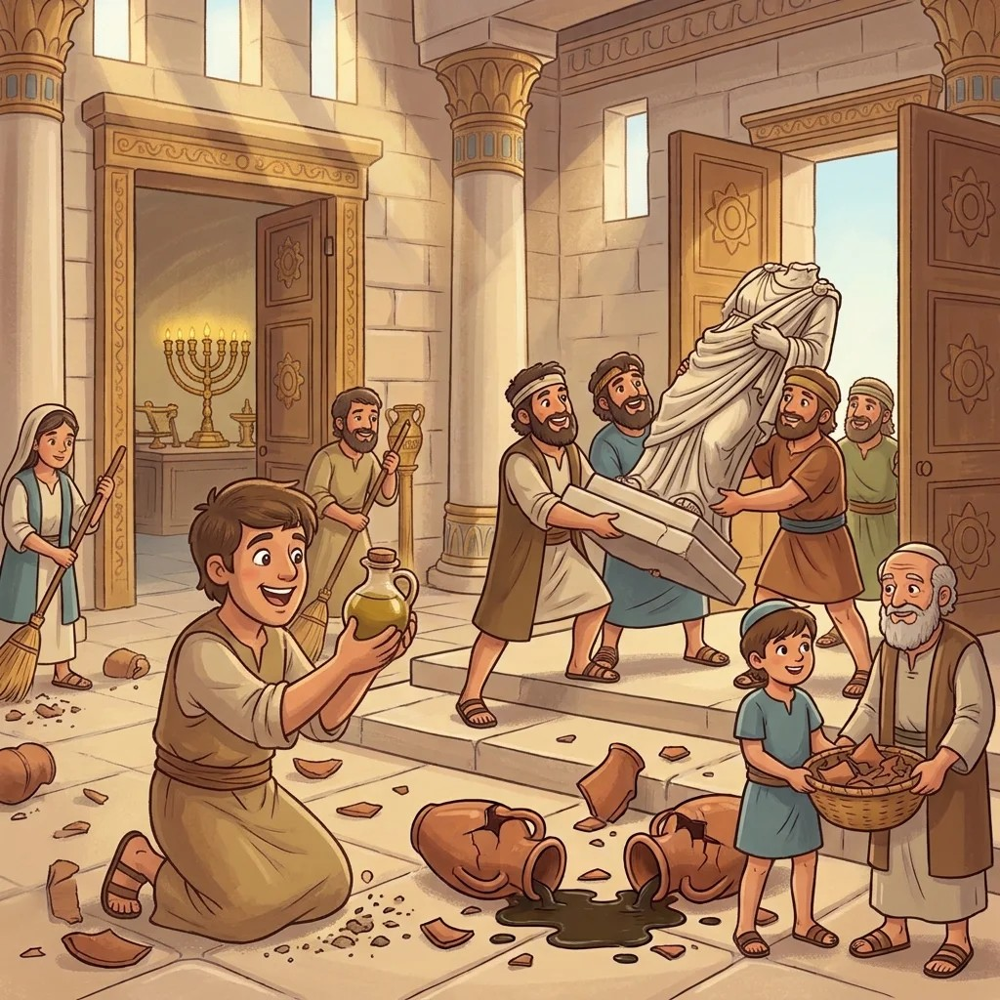

סיפור חנוכה
הנס של פך השמן – הסדר הנכון
1

היוונים שולטים בארץ ואוסרים לשמור שבת וללמוד תורה2 היוונים נכנסים לבית המקדש ומטמאים את כדי השמן
היוונים נכנסים לבית המקדש ומטמאים את כדי השמן
היוונים נכנסים לבית המקדש ומטמאים את כדי השמן3

מתתיהו הכהן קורא בקול: "מי לה' – אליי!"4

יהודה המכבי ואחיו יוצאים להילחם ביוונים5 המכבים מנצחים במלחמה – מעטים מול רבים!
המכבים מנצחים במלחמה – מעטים מול רבים!
המכבים מנצחים במלחמה – מעטים מול רבים!6

המכבים חוזרים לירושלים ומנקים את בית המקדש7

מוצאים פך שמן קטן אחד – מספיק רק ליום אחד8 נס! המנורה דולקת שמונה ימים
נס! המנורה דולקת שמונה ימים
נס! המנורה דולקת שמונה ימיםמועצת תלמידים תשפ"זבית ספר צמח א׳ · אשדוד